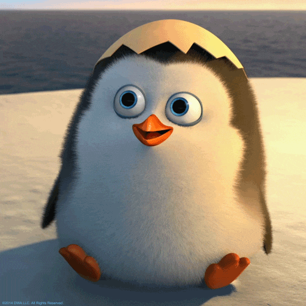
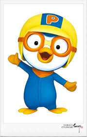
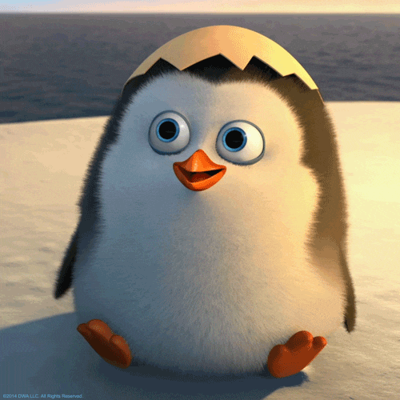
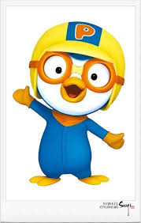

진하게
중요한 부분
강조
이탤릭체로 강조
진하게 이탤릭체로 강조
보통문자 한 단계 작은 문자
삭제
추가
보통문자의 윗첨자
보통문자의 아래첨자
하이라이팅
프로그래밍 언어가 아니라 마크업 정보를 표현하는 마크업 언어로 문서의 내용 이외의 문서라는 뜻이다. 중요한 내용을 담고 있는 em태그 단순히 이탤릭체로 표시
웹의 창시자인 팀 버너스 리 " 웹의 힘은 보편성에 있다. 장애에 구애없이 모든 사람이 접근할 수 있는 것이 필수 요소이다. " 라는 말로 웹 접근성을 설명한다.
루비(Ruby)는 1995년 일본의 프로그래머인 마츠모토 유키히로가 만든 프로그래밍 언어입니다.
윗주 윗주 (루비 ruby)사용 아래글자IOT란 각종 사물에 센서....
내가 경험한 '비포선셋'중

 



재료: 우유 ,생크림, 소금, 레몬즙